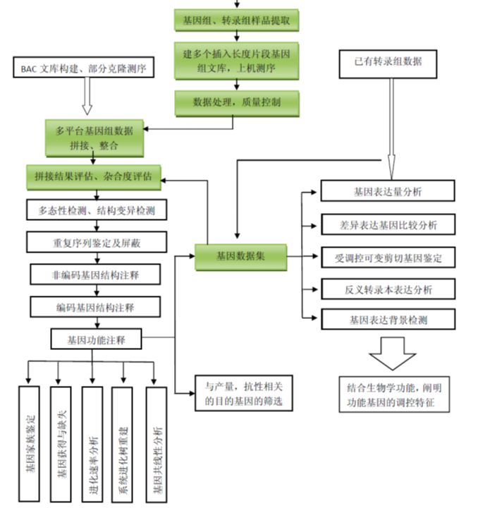

小型机器
| 测序技术 | 长度 | 精度 | 时耗 | 花费 |
| 一代 | 长（~1kb） | 高（99.99%） | 长 | 高 |
| 二代Illumina | 短（30~300bp） | 高（99.9%） | 短（1~11天/run） | 低（330~650￥/gb） |
| 三代（PacBio） | 长（10~15kb） | 低（87%） | 短（≤4h/run） | 高（5000~10000￥/gb） |
Reads 覆盖样品目标基因组的所有克隆
Pair-end reads 从两端开始测序
Mate-pair reads 两端加测序接头后再加粘性接头环化并正好可以产生一个外切酶位点。不同程度酶切后再添加测序接头测序（片段过长后自身环化困难）(可以用来辅助填补两个contig之间洞）
Insert size
Contig
Scaffold
N50 size
不仅仅有转录组数据，也可以有代谢组等其他数据。转录组数据用得较多。
